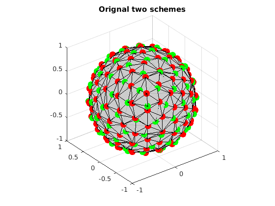
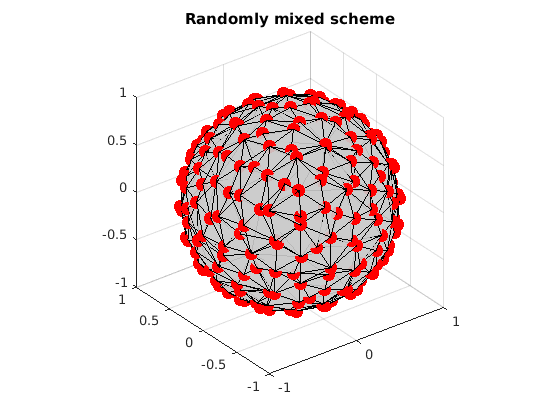
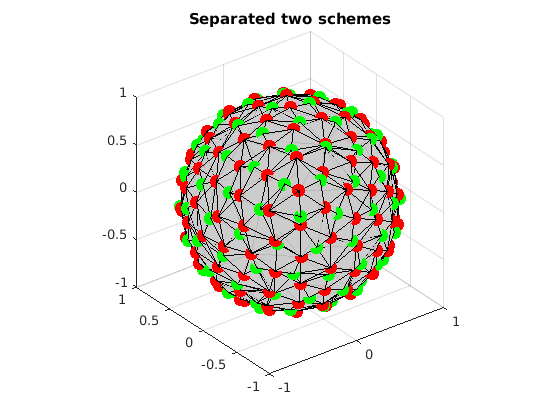

Uniformly separate several subsets from a given set
This is a demo to uniformly separate two subsets from a given set by using Mixed Integer Linear Programming (MILP). It reproduces the experiment in the paper.
Reference:
1. "Single- and Multiple-Shell Uniform Sampling Schemes for Diffusion MRI Using Spherical Codes", Jian Cheng, Dinggang Shen, Pew-Thian Yap, Peter J. Basser, IEEE Transactions on Medical Imaging, 2017.
2. "Designing Single- and Multiple-Shell Sampling Schemes for Diffusion MRI Using Spherical Code", Jian Cheng, Dinggang Shen, Pew-Thian Yap, MICCAI 2014.
Copyright (c) 2013, Jian Cheng (jian.cheng.1983@gmail.com)
Contents
Read two sets of uniform directions
grad1 = ReadDirections([getenv('HOME'), '/.dmritool/Data/Tessellation/directions_t3.txt']); n1 = size(grad1, 1); grad2 = ReadDirections([getenv('HOME'), '/.dmritool/Data/ElectricRepulsion/Elec060.txt']); n2 = size(grad2, 1); % Visualize the original two schemes. Different colors denote samples in different shells. VisualizeMultiShellScheme(grad1, grad2); title(['Orignal two schemes']);
Randomly mix these two sets
index = randperm(n1+n2); gradAll = [grad1; grad2]; gradAll = gradAll(index,:); % Visualize the mixed two schemes. VisualizeMultiShellScheme(gradAll); title(['Randomly mixed scheme']);
Extract two sets using MILP
Now we want to seperate these two sets from the mixture.
clear params grbParams % set parameters % w=1 means we do not care about the combined shell with all samples. See the paper. params.w=1; params.numSamples=[n1 n2]; % use default grb parameters [gradCell, grb, indexMatrix]=OptimalSamplingMultiSubsetsFromSameSet(gradAll,params, []);
MIPFocus = 1
Academic license - for non-commercial use only
Optimize a model with 1105 rows, 285 columns and 3855 nonzeros
Model has 141 SOS constraints
Variable types: 3 continuous, 282 integer (282 binary)
Coefficient statistics:
Matrix range [1e+00, 2e+00]
Objective range [5e-01, 5e-01]
Bounds range [3e-02, 1e+00]
RHS range [3e+00, 8e+01]
Presolve added 9 rows and 0 columns
Presolve removed 0 rows and 1 columns
Presolve time: 0.02s
Presolved: 1114 rows, 284 columns, 3477 nonzeros
Variable types: 2 continuous, 282 integer (282 binary)
Found heuristic solution: objective 0.0409562
Found heuristic solution: objective 0.0816685
Root relaxation: objective 3.139177e-01, 632 iterations, 0.01 seconds
Nodes | Current Node | Objective Bounds | Work
Expl Unexpl | Obj Depth IntInf | Incumbent BestBd Gap | It/Node Time
0 0 0.31392 0 282 0.08167 0.31392 284% - 0s
H 0 0 0.2978894 0.31392 5.38% - 0s
H 0 0 0.2978896 0.31392 5.38% - 0s
0 0 cutoff 0 0.29789 0.29789 0.00% - 0s
Cutting planes:
Clique: 60
MIR: 2
StrongCG: 155
Zero half: 1
Explored 1 nodes (933 simplex iterations) in 0.16 seconds
Thread count was 8 (of 8 available processors)
Solution count 4: 0.29789 0.297889 0.0816685 0.0409562
Optimal solution found (tolerance 1.00e-04)
Best objective 2.978895564717e-01, best bound 2.978895564717e-01, gap 0.0000%
Test the results
covering radius comparison
fprintf('covering radius of set 1 = %f degree\n', CoveringRadius(grad1)*180/pi); fprintf('covering radius of set 2 = %f degree\n', CoveringRadius(grad2)*180/pi); fprintf('covering radius of extracted set 1 = %f degree\n', CoveringRadius(gradCell{1})*180/pi); fprintf('covering radius of extracted set 2 = %f degree\n', CoveringRadius(gradCell{2})*180/pi); % number of wrongly detected samples fprintf('the number of extracted directions not in set 1: %d\n', n1-sum(indexMatrix(index<=n1,1))) fprintf('the number of extracted directions not in set 2: %d\n', n2-sum(indexMatrix(index>n1,2))) % Visualize the separated two sets VisualizeMultiShellScheme(gradCell{1}, gradCell{2}); title(['Separated two schemes']);
covering radius of set 1 = 15.858714 degree covering radius of set 2 = 18.276892 degree covering radius of extracted set 1 = 15.858714 degree covering radius of extracted set 2 = 18.276892 degree the number of extracted directions not in set 1: 0 the number of extracted directions not in set 2: 0